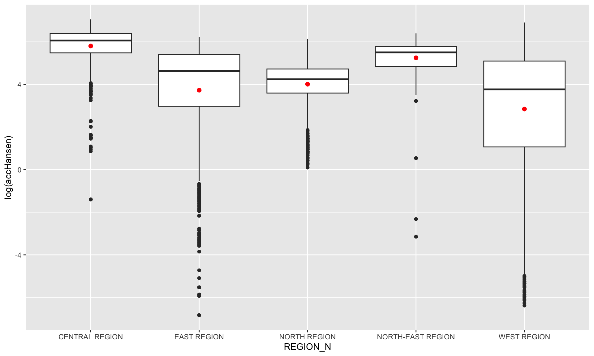
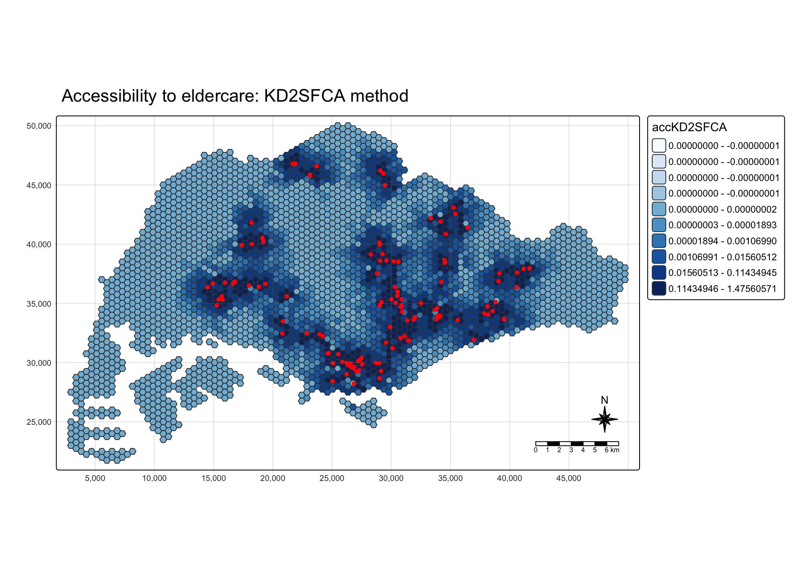
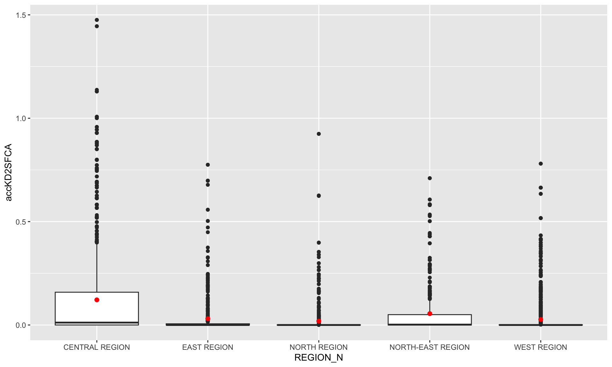
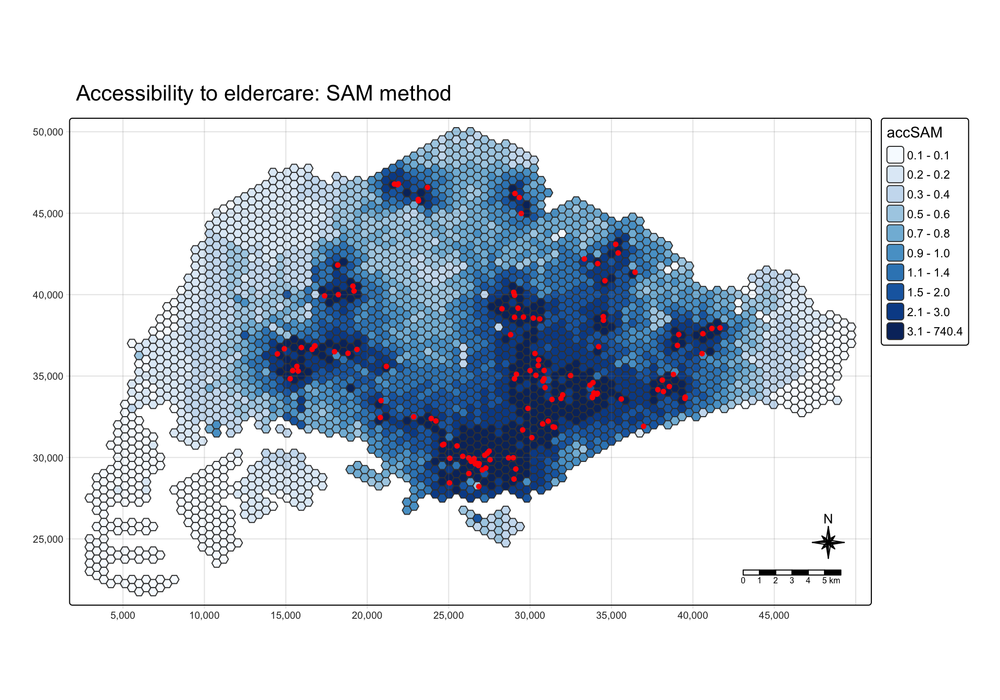
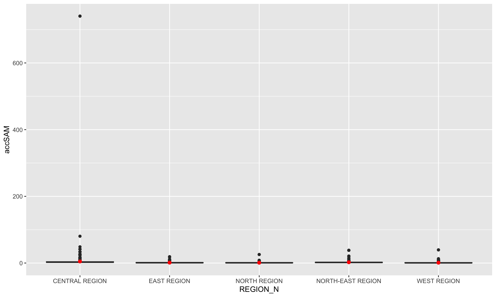
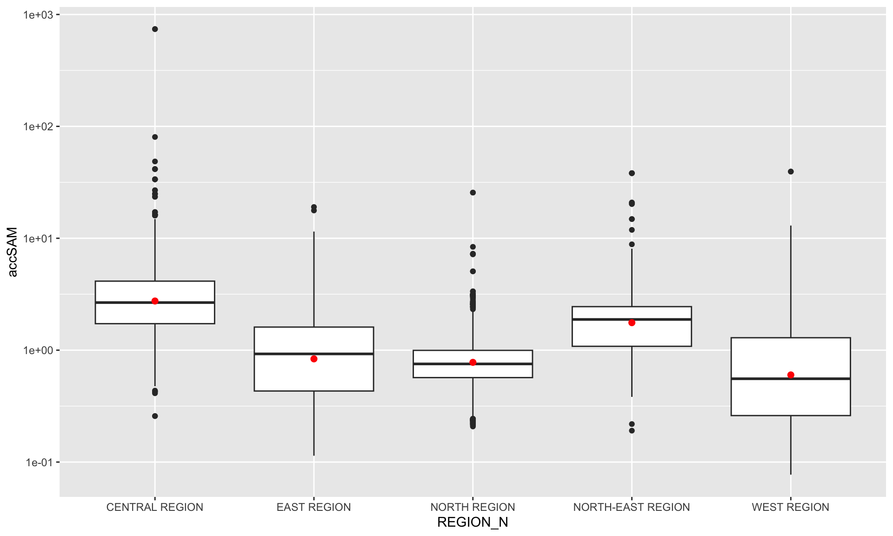
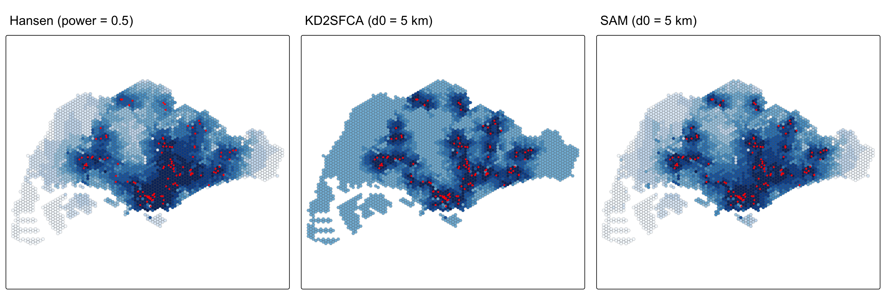

options(repos = c(CRAN = "https://cloud.r-project.org"))
pacman::p_load(tmap, SpatialAcc, sf,
ggstatsplot, reshape2,
tidyverse)
tmap_mode("plot")Hands-on Exercise 7: Modelling Geographical Accessibility
Overview
This exercise follows Chapter 17. I measure how easy it is to reach eldercare centres from different parts of Singapore. Singapore is divided into small hexagons, and each hexagon gets an accessibility score.
I use three methods from the chapter: Hansen’s potential model, KD2SFCA and the Spatial Accessibility Measure (SAM). They all use the road network distance between each hexagon and each eldercare centre. They differ in how they treat distance and competition between users.
17.2 The Data
Four data sets are used. They are the course files for this chapter, saved in data/chap17.
MP14_SUBZONE_NO_SEA_PL: URA Master Plan 2014 subzone boundary.hexagons: 250m radius hexagons that cover Singapore. These are the origins.ELDERCARE: locations of eldercare services. These are the destinations.OD_Matrix.csv: the network distance from every hexagon to every eldercare centre. All costs are in metres.
17.3 Getting Started
These packages cover spatial data, accessibility models, maps and charts. I set a CRAN mirror first, so pacman can install SpatialAcc during render if it is missing.
17.4 Geospatial Data Wrangling
17.4.1 Importing geospatial data
The three shapefiles are imported with st_read(). The subzones are polygons, the hexagons are polygons and the eldercare centres are points.
mpsz <- st_read(dsn = "data/chap17/geospatial", layer = "MP14_SUBZONE_NO_SEA_PL")Reading layer `MP14_SUBZONE_NO_SEA_PL' from data source
`/Users/lorisp/Desktop/visual/inclass6/ISSS626geo/data/chap17/geospatial'
using driver `ESRI Shapefile'
Simple feature collection with 323 features and 15 fields
Geometry type: MULTIPOLYGON
Dimension: XY
Bounding box: xmin: 2667.538 ymin: 15748.72 xmax: 56396.44 ymax: 50256.33
Projected CRS: SVY21hexagons <- st_read(dsn = "data/chap17/geospatial", layer = "hexagons")Reading layer `hexagons' from data source
`/Users/lorisp/Desktop/visual/inclass6/ISSS626geo/data/chap17/geospatial'
using driver `ESRI Shapefile'
Simple feature collection with 3125 features and 6 fields
Geometry type: POLYGON
Dimension: XY
Bounding box: xmin: 2667.538 ymin: 21506.33 xmax: 50010.26 ymax: 50256.33
Projected CRS: SVY21 / Singapore TMeldercare <- st_read(dsn = "data/chap17/geospatial", layer = "ELDERCARE")Reading layer `ELDERCARE' from data source
`/Users/lorisp/Desktop/visual/inclass6/ISSS626geo/data/chap17/geospatial'
using driver `ESRI Shapefile'
Simple feature collection with 120 features and 19 fields
Geometry type: POINT
Dimension: XY
Bounding box: xmin: 14481.92 ymin: 28218.43 xmax: 41665.14 ymax: 46804.9
Projected CRS: SVY21 / Singapore TM17.4.2 Updating CRS information
The subzone layer says SVY21, but it has no EPSG code. I transform all three layers to EPSG:3414 so they share the same projected system. Distances are then in metres.
mpsz <- st_transform(mpsz, 3414)
eldercare <- st_transform(eldercare, 3414)
hexagons <- st_transform(hexagons, 3414)st_crs(mpsz)Coordinate Reference System:
User input: EPSG:3414
wkt:
PROJCRS["SVY21 / Singapore TM",
BASEGEOGCRS["SVY21",
DATUM["SVY21",
ELLIPSOID["WGS 84",6378137,298.257223563,
LENGTHUNIT["metre",1]]],
PRIMEM["Greenwich",0,
ANGLEUNIT["degree",0.0174532925199433]],
ID["EPSG",4757]],
CONVERSION["Singapore Transverse Mercator",
METHOD["Transverse Mercator",
ID["EPSG",9807]],
PARAMETER["Latitude of natural origin",1.36666666666667,
ANGLEUNIT["degree",0.0174532925199433],
ID["EPSG",8801]],
PARAMETER["Longitude of natural origin",103.833333333333,
ANGLEUNIT["degree",0.0174532925199433],
ID["EPSG",8802]],
PARAMETER["Scale factor at natural origin",1,
SCALEUNIT["unity",1],
ID["EPSG",8805]],
PARAMETER["False easting",28001.642,
LENGTHUNIT["metre",1],
ID["EPSG",8806]],
PARAMETER["False northing",38744.572,
LENGTHUNIT["metre",1],
ID["EPSG",8807]]],
CS[Cartesian,2],
AXIS["northing (N)",north,
ORDER[1],
LENGTHUNIT["metre",1]],
AXIS["easting (E)",east,
ORDER[2],
LENGTHUNIT["metre",1]],
USAGE[
SCOPE["Cadastre, engineering survey, topographic mapping."],
AREA["Singapore - onshore and offshore."],
BBOX[1.13,103.59,1.47,104.07]],
ID["EPSG",3414]]The EPSG code is now 3414.
17.4.3 Cleaning and updating attribute fields of the geospatial data
I keep only the ID fields. Then I add capacity to each eldercare centre and demand to each hexagon.
eldercare <- eldercare %>%
select(fid, ADDRESSPOS) %>%
mutate(capacity = 100)hexagons <- hexagons %>%
select(fid) %>%
mutate(demand = 100)Both values are a constant 100, as in the chapter. This means every centre has the same size and every hexagon has the same need. The differences in the results come from location and distance only. In real planning, I would use the elderly population and the real number of places.
head(eldercare)Simple feature collection with 6 features and 3 fields
Geometry type: POINT
Dimension: XY
Bounding box: xmin: 14481.92 ymin: 29350.17 xmax: 38803.81 ymax: 36639.12
Projected CRS: SVY21 / Singapore TM
fid ADDRESSPOS geometry capacity
1 1 601318 POINT (16614.08 36639.12) 100
2 2 462509 POINT (38803.81 35098.78) 100
3 3 640190 POINT (14481.92 36357.61) 100
4 4 190005 POINT (31505.35 31853.52) 100
5 5 160044 POINT (27218.35 30135.49) 100
6 6 160117 POINT (27278.94 29350.17) 100head(hexagons)Simple feature collection with 6 features and 2 fields
Geometry type: POLYGON
Dimension: XY
Bounding box: xmin: 2667.538 ymin: 22756.33 xmax: 3244.888 ymax: 27756.33
Projected CRS: SVY21 / Singapore TM
fid geometry demand
1 1 POLYGON ((2667.538 27506.33... 100
2 2 POLYGON ((2667.538 25006.33... 100
3 3 POLYGON ((2667.538 24506.33... 100
4 4 POLYGON ((2667.538 24006.33... 100
5 5 POLYGON ((2667.538 23506.33... 100
6 6 POLYGON ((2667.538 23006.33... 10017.5 Aspatial Data Handling and Wrangling
17.5.1 Importing Distance Matrix
The OD matrix is in a long format. Each row is one hexagon and centre pair.
ODMatrix <- read_csv("data/chap17/aspatial/OD_Matrix.csv", skip = 0)glimpse(ODMatrix)Rows: 375,000
Columns: 6
$ origin_id <dbl> 1, 1, 1, 1, 1, 1, 1, 1, 1, 1, 1, 1, 1, 1, 1, 1, 1, 1, 1…
$ destination_id <dbl> 1, 2, 3, 4, 5, 6, 8, 9, 10, 11, 12, 13, 14, 15, 16, 18,…
$ entry_cost <dbl> 667.9336, 667.9336, 667.9336, 667.9336, 667.9336, 667.9…
$ network_cost <dbl> 19846.87, 45026.76, 17644.17, 36009.56, 31068.09, 31194…
$ exit_cost <dbl> 47.64874, 31.87162, 173.47882, 92.19676, 64.62840, 117.…
$ total_cost <dbl> 20562.45, 45726.57, 18485.58, 36769.69, 31800.65, 31979…There are 3,125 hexagons and 120 centres, so the table should have 375,000 rows.
17.5.2 Tidying distance matrix
The modelling function needs a wide matrix. Rows are origins (hexagons) and columns are destinations (eldercare centres). The chapter uses spread(); it still works, although pivot_wider() is the newer function.
distmat <- ODMatrix %>%
select(origin_id, destination_id, total_cost) %>%
spread(destination_id, total_cost)%>%
select(c(-c('origin_id')))The distance is in metres. I divide by 1,000 to get kilometres.
distmat_km <- as.matrix(distmat/1000)The model matches rows by position, not by ID. So I check that the matrix has one row per hexagon and one column per centre, and that the IDs are in the same order as the two layers.
tibble(check = c("rows = hexagons",
"columns = eldercare centres",
"row order matches hexagon fid",
"column order matches eldercare fid"),
result = c(nrow(distmat_km) == nrow(hexagons),
ncol(distmat_km) == nrow(eldercare),
all(sort(unique(ODMatrix$origin_id)) == hexagons$fid),
all(as.numeric(colnames(distmat_km)) == eldercare$fid)))# A tibble: 4 × 2
check result
<chr> <lgl>
1 rows = hexagons TRUE
2 columns = eldercare centres TRUE
3 row order matches hexagon fid TRUE
4 column order matches eldercare fid TRUE dim(distmat_km)[1] 3125 120distmat_km[1:5, 1:5] 1 2 3 4 5
[1,] 20.56245 45.72657 18.48558 36.76969 31.80065
[2,] 23.06902 48.23313 20.99214 39.27625 34.30721
[3,] 23.59012 48.75423 21.51324 39.79735 34.82831
[4,] 24.06922 49.23334 21.99235 40.27646 35.30742
[5,] 24.24117 49.40529 22.16430 40.44841 35.4793717.6 Modelling and Visualising Accessibility using Hansen Method
17.6.1 Computing Hansen’s accessibility
Hansen’s model adds up all centres, but closer centres get much more weight. The power value controls how fast the weight drops with distance. Hansen does not consider competition from other hexagons.
acc_Hansen <- data.frame(ac(hexagons$demand,
eldercare$capacity,
distmat_km,
#d0 = 50,
power = 2,
family = "Hansen"))head(acc_Hansen) ac.hexagons.demand..eldercare.capacity..distmat_km..power...2..
1 1.648313e-14
2 1.096143e-16
3 3.865857e-17
4 1.482856e-17
5 1.051348e-17
6 5.076391e-18The first rows are hexagons at the far western edge. They are far from every centre, so with power = 2 their scores are almost zero.
The default column name is long and messy, so I rename it.
colnames(acc_Hansen) <- "accHansen"head(acc_Hansen) accHansen
1 1.648313e-14
2 1.096143e-16
3 3.865857e-17
4 1.482856e-17
5 1.051348e-17
6 5.076391e-18acc_Hansen <- as_tibble(acc_Hansen)bind_cols() joins the scores back to the hexagons by row order. The output is still an sf data frame, so it can be mapped.
hexagon_Hansen <- bind_cols(hexagons, acc_Hansen)
hexagon_HansenSimple feature collection with 3125 features and 3 fields
Geometry type: POLYGON
Dimension: XY
Bounding box: xmin: 2667.538 ymin: 21506.33 xmax: 50010.26 ymax: 50256.33
Projected CRS: SVY21 / Singapore TM
First 10 features:
fid demand accHansen geometry
1 1 100 1.648313e-14 POLYGON ((2667.538 27506.33...
2 2 100 1.096143e-16 POLYGON ((2667.538 25006.33...
3 3 100 3.865857e-17 POLYGON ((2667.538 24506.33...
4 4 100 1.482856e-17 POLYGON ((2667.538 24006.33...
5 5 100 1.051348e-17 POLYGON ((2667.538 23506.33...
6 6 100 5.076391e-18 POLYGON ((2667.538 23006.33...
7 7 100 1.769616e-13 POLYGON ((3100.551 28756.33...
8 8 100 9.979647e-14 POLYGON ((3100.551 28256.33...
9 9 100 5.671831e-14 POLYGON ((3100.551 27756.33...
10 10 100 2.621063e-14 POLYGON ((3100.551 27256.33...The chapter then runs the same steps in one code chunk. Note that this version uses power = 0.5. It replaces the result above, so the map below uses 0.5, not 2. A smaller power means distance matters less, so far centres still add some value.
acc_Hansen <- data.frame(ac(hexagons$demand,
eldercare$capacity,
distmat_km,
#d0 = 50,
power = 0.5,
family = "Hansen"))
colnames(acc_Hansen) <- "accHansen"
acc_Hansen <- as_tibble(acc_Hansen)
hexagon_Hansen <- bind_cols(hexagons, acc_Hansen)summary(hexagon_Hansen$accHansen) Min. 1st Qu. Median Mean 3rd Qu. Max.
1.080e-03 1.371e+01 8.872e+01 1.550e+02 2.399e+02 1.158e+03 17.6.2 Visualising Hansen’s accessibility
17.6.2.1 Extracting map extent
st_bbox() gets the extent of the hexagon layer. I reuse it for all three maps, so they have the same frame.
mapex <- st_bbox(hexagons)The map uses 10 quantile classes. Each class has about the same number of hexagons. Darker blue means better access. The red dots are the eldercare centres.
tm_shape(hexagon_Hansen,
bbox = mapex) +
tm_polygons(fill = "accHansen",
fill.scale = tm_scale_intervals(
style = "quantile",
n = 10,
values = "brewer.blues")) +
tm_shape(eldercare) +
tm_dots(size = 0.3,
fill = "red",
col = "black") +
tm_title("Accessibility to eldercare: Hansen method") +
tm_layout(frame = TRUE) +
tm_compass(type="8star", size = 2) +
tm_scalebar() +
tm_grid(alpha = 0.2)17.6.3 Statistical graphic visualisation
To compare regions, I add the URA planning region to each hexagon with a spatial join.
hexagon_Hansen <- st_join(hexagon_Hansen, mpsz,
join = st_intersects)A hexagon on a subzone boundary touches more than one subzone. st_intersects keeps all matches, so some hexagons appear more than once. I keep the chapter method for the boxplots, but I check how many rows are added.
tibble(hexagons = nrow(hexagons),
rows_after_join = nrow(hexagon_Hansen),
unique_hexagons = n_distinct(hexagon_Hansen$fid))# A tibble: 1 × 3
hexagons rows_after_join unique_hexagons
<int> <int> <int>
1 3125 5406 3125The Hansen values are very skewed, so the chapter plots them on a log scale. The red dot is the mean of each region. I use fun because fun.y is deprecated in the current ggplot2.
ggplot(data=hexagon_Hansen,
aes(y = log(accHansen),
x= REGION_N)) +
geom_boxplot() +
geom_point(stat="summary",
fun="mean",
colour ="red",
size=2)
17.7 Modelling and Visualising Accessibility using KD2SFCA Method
17.7.1 Computing KD2SFCA’s accessibility
KD2SFCA is a two step floating catchment method. First, each centre’s capacity is shared among the hexagons within its catchment. Then each hexagon adds up the shares of the centres it can reach. d0 = 5 sets a 5 km catchment, and a kernel makes closer pairs count more. Unlike Hansen, it includes competition between hexagons.
acc_KD2SFCA <- data.frame(ac(hexagons$demand,
eldercare$capacity,
distmat_km,
d0 = 5,
power = 2,
family = "KD2SFCA"))
colnames(acc_KD2SFCA) <- "accKD2SFCA"
acc_KD2SFCA <- as_tibble(acc_KD2SFCA)
hexagon_KD2SFCA <- bind_cols(hexagons, acc_KD2SFCA)summary(hexagon_KD2SFCA$accKD2SFCA) Min. 1st Qu. Median Mean 3rd Qu. Max.
0.000e+00 0.000e+00 3.000e-08 3.840e-02 4.616e-03 1.476e+00 17.7.2 Visualising KD2SFCA’s accessibility
The same map design is used. mapex is reused for the bbox argument.
tm_shape(hexagon_KD2SFCA,
bbox = mapex) +
tm_polygons(fill = "accKD2SFCA",
fill.scale = tm_scale_intervals(
style = "quantile",
n = 10,
values = "brewer.blues")) +
tm_shape(eldercare) +
tm_dots(size = 0.3,
fill = "red",
col = "black") +
tm_title("Accessibility to eldercare: KD2SFCA method") +
tm_layout(frame = TRUE) +
tm_compass(type="8star", size = 2) +
tm_scalebar() +
tm_grid(alpha = 0.2)
17.7.3 Statistical graphic visualisation
hexagon_KD2SFCA <- st_join(hexagon_KD2SFCA, mpsz,
join = st_intersects)These values are not log transformed, as in the chapter.
ggplot(data=hexagon_KD2SFCA,
aes(y = accKD2SFCA,
x= REGION_N)) +
geom_boxplot() +
geom_point(stat="summary",
fun="mean",
colour ="red",
size=2)
17.8 Modelling and Visualising Accessibility using Spatial Accessibility Measure (SAM) Method
17.8.1 Computing SAM accessibility
SAM also accounts for supply, demand and distance. It is designed to reduce the over estimation problem of floating catchment methods. I use the same d0 = 5 and power = 2 as the chapter.
acc_SAM <- data.frame(ac(hexagons$demand,
eldercare$capacity,
distmat_km,
d0 = 5,
power = 2,
family = "SAM"))
colnames(acc_SAM) <- "accSAM"
acc_SAM <- as_tibble(acc_SAM)
hexagon_SAM <- bind_cols(hexagons, acc_SAM)summary(hexagon_SAM$accSAM) Min. 1st Qu. Median Mean 3rd Qu. Max.
0.07718 0.40249 0.86880 1.77638 1.82919 740.42209 17.8.2 Visualising SAM’s accessibility
tm_shape(hexagon_SAM,
bbox = mapex) +
tm_polygons(fill = "accSAM",
fill.scale = tm_scale_intervals(
style = "quantile",
n = 10,
values = "brewer.blues")) +
tm_shape(eldercare) +
tm_dots(size = 0.3,
fill = "red",
col = "black") +
tm_title("Accessibility to eldercare: SAM method") +
tm_layout(frame = TRUE) +
tm_compass(type="8star", size = 2) +
tm_scalebar() +
tm_grid(alpha = 0.2)
17.8.3 Statistical graphic visualisation
hexagon_SAM <- st_join(hexagon_SAM, mpsz,
join = st_intersects)ggplot(data=hexagon_SAM,
aes(y = accSAM,
x= REGION_N)) +
geom_boxplot() +
geom_point(stat="summary",
fun="mean",
colour ="red",
size=2)
One central hexagon has a SAM value of about 740, while most values are below 2. This outlier squashes all the boxes. I add a log scale version so the regional differences are easier to see. All SAM values are above zero, so the log scale works here.
ggplot(data=hexagon_SAM,
aes(y = accSAM,
x= REGION_N)) +
geom_boxplot() +
geom_point(stat="summary",
fun="mean",
colour ="red",
size=2) +
scale_y_log10()
My Comparison and Conclusion
I put the three maps side by side. The colour classes are quantiles, so each map compares hexagons within one method. The values themselves are on different scales and should not be compared across maps.
acc_map <- function(data, var, title) {
tm_shape(data, bbox = mapex) +
tm_polygons(fill = var,
fill.scale = tm_scale_intervals(
style = "quantile",
n = 10,
values = "brewer.blues"),
fill.legend = tm_legend_hide(),
col_alpha = 0.2) +
tm_shape(eldercare) +
tm_dots(size = 0.15, fill = "red") +
tm_title(title)
}
tmap_arrange(
acc_map(bind_cols(hexagons, acc_Hansen), "accHansen", "Hansen (power = 0.5)"),
acc_map(bind_cols(hexagons, acc_KD2SFCA), "accKD2SFCA", "KD2SFCA (d0 = 5 km)"),
acc_map(bind_cols(hexagons, acc_SAM), "accSAM", "SAM (d0 = 5 km)"),
ncol = 3)